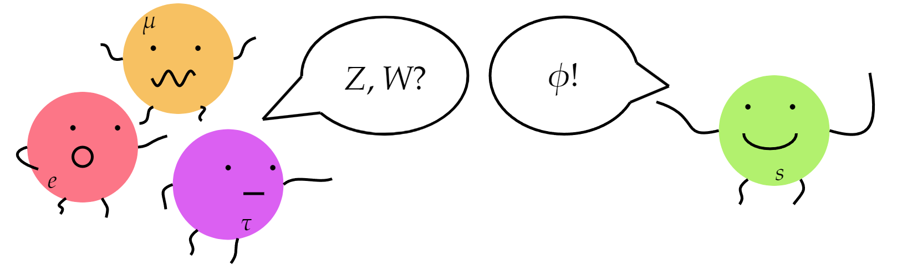
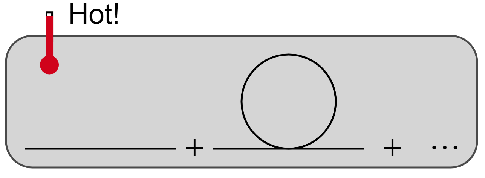

Fernando Garcia
Home Research Blog Other About me
Hey there! My name is Fernando Garcia; I'm a physics and pure mathematics major at the University of New Mexico (Senior in the 24-25 school year).

My current research revolves around physics beyond the standard model (BSM). I have been working with neutrinos and thermal (quantum) field theory.

Besides working on field theories and studying them for fun, I also like to read about other topics such as strings and gravity.
At this moment, I have no time to enjoy mathematics as I used to as a hobby (although QFT gives me more mathematical problems than I could ask for!). Still, representation theory (and group theory in general) holds a special place due to its connections to physics. I do wish to study Algebraic topology in the near future.
I love playing my electric guitars, watching movies, reading, taking pictures, building things, and above all, explore our universe: from trying new food and meeting new people to the intricate works of nature.
School last semester
PHYS480 - General Relativity
PHYS523 - Quantum Field Theory I
MATH402 - Advanced Calculus 2 (Real Analysis II)
MATH472 - Fouerier Analysis and Wavelets